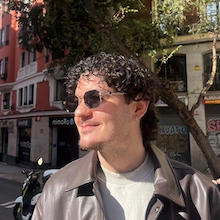

About me
I'm Francesco — a UX/UI designer and Localization QA specialist based in Madrid. I care deeply about the spaces between pixels: the interactions people barely notice but always feel.
I grew up in Abruzzo, Italy — a region most people can't place on a map, which probably explains why I've always been drawn to making things clearer. I got into design the hard way: by using software that frustrated me until I figured out how to fix it myself. No design school, no epiphany — just a low tolerance for bad interfaces and a Computer Science background that made me dangerous with code.
I moved to Madrid and built a career at the crossroads of two disciplines: UX/UI design and Localization QA. One asks me to think in systems and empathy; the other asks me to think in precision and edge cases. Together, they make me unusually good at catching what shouldn't ship.
Outside the screen, I'm producing music, rewatching the same games I've loved for fifteen years, and photographing corners of cities most people walk past.

Madrid, 2025 — between meetings and music
Design
Quality & Localization
Development
I don't just make things look good — I make them make sense. My background in both design and QA gives me a rare lens: I build interfaces with an eye for what breaks, what confuses, and what quietly delights.
Working across Italian, English, and Spanish means I also think in multiple registers — understanding how tone, context, and culture shift a user experience before it ever reaches a screen.
The best interfaces are the ones people don't notice. They just work — and work beautifully. I obsess over the things most people skip: spacing, micro-copy, transition timing, error states.
Great design starts with asking why three more times than feels comfortable. A clear problem statement is worth more than a hundred wireframes.
Perfection is a moving target. I'd rather get something real in front of people and iterate than spend months refining something no one's validated yet.
A good solution in one language, culture, or context can be a bad one in another. My multilingual background has taught me to always ask: for whom, and where?
Localization QA Tester
Universally Speaking · Madrid
End-to-end Italian LQA for major game titles including Red Dead Redemption, Dragon Ball: Sparking! Zero, and more. Using Bonsai and JIRA to identify, document, and validate linguistic and functional issues across full regression cycles.
UX/UI Designer
Freelance · Italy
End-to-end design for clients across entertainment, transport, and lifestyle. Conducted user interviews and usability testing, delivering wireframes through high-fidelity Figma prototypes. One project reduced user navigation time by 30% through clearer information architecture.
UX/UI Design Course
Talent Garden
Formal training in UX process, design systems, and prototyping — the structured foundation that gave shape to years of self-taught practice.
Music Producer
BeatStars · Independent
Produced and released original tracks independently. Where the obsession with craft, sound design, and audience feeling first took hold — long before it had a design name.
Computer Science & Telecommunications
I.I.S E. Alessandrini · Abruzzo
The technical foundation. Five years of IT that taught me to think in systems, debug obsessively, and never trust something just because it compiles.
Location
Madrid, Spain
Open to remote & relocation
Currently playing
Stray · Pokémon Legends: Z-A
Always open to recommendations
On repeat
Italian rap & Latin urbano
Lazza · Bad Bunny · Rauw Alejandro
Last trip
Wrocław, Poland
Always planning the next one
Languages
Want to work together?
Let's talk.